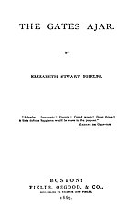

|
|
|
|
1. There is a gate that stands ajar,
|
歌詞：( 台語 ) |
|
https://hymnary.org/hymn/CWH1938/page/102
|
|
|
|
|


https://www.youtube.com/watch?v=Gu3i8OsCYtA
|
|
|
|
1. There is a gate that stands ajar,
|
歌詞：( 台語 ) |
|
https://hymnary.org/hymn/CWH1938/page/102
|
|
|
|
|
There is a Gate That Stands Ajar (The Gate Ajar for Me) https://www.youtube.com/watch?v=KKFzliizNjY
| Text: | The Gate Ajar for Me |
| Author: | Mrs. Lydia Baxter |
| Tune: | [There is a gate that stands ajar] |
| Composer: | S. J. Vail |
| Short Name: | Lydia Baxter |
| Full Name: | Baxter, Lydia, 1809-1874 |
| Birth Year: | 1809 |
| Death Year: | 1874 |
Baxter, Lydia,
an American Baptist, was b. at Petersburg, N. York, Sep. 2, 1800, married to Mr. Baxter, and d. in N. Y. June 22, 1874. In addition to her Gems by the Wayside, 1855, Mrs. Baxter contributed many hymns to collections for Sunday Schools, and Evangelistic Services. Of these, the following are the best known:—
| Title: | [There is a gate that stands ajar] (Vail) |
| Composer: | S. J. Vail (1872) |
| Meter: | 8.7.8.7.8.8.8.6 |
| Incipit: | 55351 16536 53131 |
| Key: | C Major |
| Copyright: | Public Domain |
| Short Name: | S. J. Vail |
| Full Name: | Vail, S. J. (Silas Jones), 1818-1884 |
| Birth Year: | 1818 |
| Death Year: | 1883 |
In his youth Silas Jones Vail learned the batter's trade at Danbury, Ct. While still a young man, he went to New York and took employment in the fashionable hat store of William H. Beebe. Later he established himself in business as a hatter at 118 Fulton Street, where he was for many years successful. But the conditions of trade changed, and he could not change with them. After his failure in 1869 or 1870 he devoted his entire time and attention to music. He was the writer of much popular music for use in churches and Sunday schools. Pieces of music entitled "Scatter Seeds of Kindness," "Gates Ajar," "Close to Thee," "We Shall Sleep, but not Forever," and "Nothing but Leaves" were known to all church attendants twenty years ago. Fanny Crosby, the blind authoress, wrote expressly for him many of the verses he set to music.
--Vail, Henry H. (Henry Hobart). Genealogy of some of the Vail family descended from Jeremiah Vail at Salem, Mass., 1639, p. 234.
"THE GATE AJAR FOR ME"
"Strive to enter in at the strait gate…." (Lk. 13.24)
INTRO.:
A song which indicates that sinners can respond to the invitation because Jesus has left a gate open for us is "The Gate Ajar for Me" (#533 in Sacred Selections for the Church). The text was written by Mrs. Lydia Baxter (1809-1874). It may have been published as early as 1855 in her Gems by the Wayside. An invalid, Mrs. Baxter is perhaps best remembered for her song, "Take the Name of Jesus With You." The tune (Gate Ajar) was composed by Silas Jones Vail (1818-1884). It is dated 1872. A couple of Vail’s other melodies that are well known are used with Fanny Crosby’s "Close to Thee" and the hymn often attributed to Johann W. Von Goethe that begins, "Purer, Yet and Purer." Sometimes the composer’s name is given as Philip Philips (1834-1895). A noted music publisher, Phillips may have first published the song and perhaps arranged it. Among hymnbooks published by members of the Lord’s church during the twentieth century for use in churches of Christ, "The Gate Ajar for Me" appeared in the 1917 Selected Revival Songs edited by F. L. Rowe; the 1937 Great Songs of the Church No. 2 edited by E. L. Jorgenson; the 1935 Christian Hymns (No. 1), the 1948 Christian Hymns No. 2, and the 1966 Christian Hymns No. 3 all edited by L. O. Sanderson; and the 1963 Christian Hymnal edited by J. Nelson Slater. Today it is found in the 1971 Songs of the Church and the 1990 Songs of the Church 21st C. Ed. both edited by Alton H. Howard; and the 1992 Praise for the Lord edited by John P. Wiegand; in addition to Sacred Selections, and the 2007 Sacred Songs of the Church edited by William D. Jeffcoat.
The song invites people to enter the strait gate that they might receive salvation.
I. Stanza 1 emphasizes the existence of the gate
"There is a gate that stands ajar, And through its portals gleaming
A radiance from the cross afar, The Savior’s love revealing."
A. Jesus said that there is strait gate that opens to a narrow way which leads
to everlasting life: Matt. 7.13-14
B. The figurative language of the song may picture the radiance that gleams
through its portals as coming from the gates of the eternal city: Rev. 21.25
C. And this radiance shines upon the cross that reveals the Savior’s love for
our salvation: 1 Cor. 1.18
II. Stanza 2 emphasizes the free nature of the gate
"That gate ajar stands free for all Who seek through it salvation:
The rich and poor, the great and small, Of every tribe and nation."
A. The gift that God offers to those who enter the gate is free: Rom. 5.15-18
B. The result of the free gift is the salvation that Jesus came to bring to
mankind: 1 Pet. 1.9
C. This free gift is offered to every tribe and nation because the gospel is
for the whole world: Mk. 16.15-16
III. Stanza 3 emphasizes the blessings of the gate
"Press onward, then, though foes may frown, While mercy’s gate is open;
Accept the cross, and win the crown, Love’s everlasting token."
A. That we might enter the strait gate and stay on the narrow way to receive
the blessings we must press onward: Phil. 3.14
B. These blessings are available only while the door is open: Rev. 3.8
C. And these blessings are offered because of the great love of God: Jn. 3.16
IV. Stanza 4 emphasizes the final destination of the gate
"Beyond the river’s brink we’ll lay The cross that here is given,
And bear the crown of life away, And love Him more in heaven."
A. The idea of "beyond the river’s brink" often poetically suggests crossing
over the river of death into the eternal promised land just as the Israelites
crossed over the Jordan River into Canaan: Josh. 3.17, Heb. 4.8-9
B. Then, we shall lay down the cross that we have borne throughout this life:
Matt. 16.24
C. And we shall exchange it that we might bear away the crown of life: Jas.
1.12
CONCL.:
The chorus reminds us that the gate has been left ajar for anyone who wishes to
enter.
"Oh, depth of mercy! can it be That gate was left ajar for me?
For me, for me? Was left ajar for me?"
Most of our books (except Sacred
Selections) have altered the first two lines of the chorus to read, "Yes,
in the blood of Christ I see The gate that stands ajar for me." I do not know
why this change was made, nor have I been able to find out who did it, but it
does appear as early as the Selected
Revival Songs mentioned earlier. In any event, if I am a
sinner, it is good to know that Jesus has left "The Gate Ajar For Me."
|

Title page of first edition
|
|
| Author |
Elizabeth Stuart Phelps Elizabeth Stuart Phelps Ward |
|---|---|
| Illustrator |
Jessie Curtis (1870 edition only)[1] |
| Country | United States |
| Language | English |
| Genre | inspirational fiction |
| Publisher | Fields, Osgood & Co. [Boston, MA] |
|
Publication date
|
1868 |
| Media type | Print (hardcover) |
| Pages | 248 pp (first edition) |
The Gates Ajar is an 1868 religious novel by Elizabeth Stuart Phelps (later Elizabeth Phelps Ward) that was immensely popular following its publication. It was the second best-selling religious novel of the 19th century.[2] 80,000 copies were sold in America by 1900; 100,000 were sold in England during the same time period.[3] Sequels Beyond the Gates (1883) and The Gates Between (1887) were also bestsellers, and the three together are referred to as the author's "Spiritualist novels."[4]
The novel is presented like a diary by its main protagonist, Mary Cabot, who mourns the death of her brother Royal. Much of the plot is presented as a dialogue about the afterlife between the two women. The novel represents heaven as being similar to Earth (but better). In contrast with traditions of Calvinism, Phelps's version of heaven is corporeal where the dead have "spiritual bodies", live in houses, raise families, and participate in various activities.[7] The idea was not original to Phelps; at least one earlier book, the anonymous Heaven Our Home, was advertising as early as 1863 about its vision of "a Social Heaven in which there will be the most Perfect Recognition, Intercourse, Fellowship, and Bliss.[8]
Mary Cabot of Homer, Massachusetts, has recently been notified of Royal Cabot’s death, the brother to whom she is intensely devoted. He was a soldier, "shot dead" in the American Civil War. Their parents are deceased, and Mary is unable to find sympathy and relief from anyone—acquaintances, the church deacon, or pastor. She is losing her religious faith and increasingly despairs. She eventually turns to Winifred Forceythe, her widowed aunt who fortuitously arrives from Kansas with her daughter, Faith. Over the course of their conversations, Winifred offers an inspiring image of heaven and gradually restores her niece's faith. Winifred Forceythe dies, leaving Mary Cabot as guardian of her cousin, Faith. Mary has again found meaning in life and her outlook is joyful.[3]
Phelps began writing The Gates Ajar in the final year of the American Civil War, inspired in part by the death of her mother, stepmother, and her fiancé who was killed at the Battle of Antietam.[8] Phelps later claimed the book came from divine inspiration: "The angel said unto me 'Write!' and I wrote."[8] She spent two years revising the book in her father's attic.[9] Frustrated by the insignificant role women played during the War, she wrote the book specifically with a female audience in mind. In an autobiography, she reflected, "Into that great world of woe my little book stole forth, trembling... I do not think I thought so much about the suffering of men... but the women,—the helpless, outnumbering, unconsulted women."[10] Emily Dickinson, according to scholar Barton Levi St. Armand, was among those who believed in a similar vision of the afterlife and found the book helpful in organizing those thoughts.[11]
The book was published in November 1868 by Fields, Osgood, and Company. Along with an initial royalty check for $600, publisher James T. Fields reported to her, "Your book is moving grandly. It has already a sale of four thousand copies."[12]
The Gates Ajar, according to Helen Sootin Smith, incorporates at least four literary elements: "sermon, diary, sentimental domestic plot, and allegory." She identified the latter as its "most important literary form."
Phelps published two similar books, Beyond the Gates (1883) and The Gates Between (1887), though they are not traditional sequels as they do not continue with the plot or characters of The Gates Ajar.[13] She later lamented she did not write more, partially because of how much effort she had expended so quickly because of her financial duress. In a letter to George Eliot, she wrote:
The Gates Ajar was successful and established Phelps's career and impressed upon the author her ability to influence culture and gave her the confidence to pursue women's rights.[15] By January 1870, one critic estimated, "Miss Phelps has made $20,000 out of The Gates Ajar. She won't be likely to shut them at this rate."[16] It is estimated that the book sold over 80,000 copies in the United States.[17]
The book was part of a wave of some eighty books concerning the afterlife that were published in the decade following the Civil War (during which very little such literature appeared).[18] Its popularity has been described as fueled by Americans seeking the help of religion after the war concluded, but the book was also a success in Britain and translated in at least four different languages.[19][20] In 1877, The New York Times noted that "there are persons to whom The Gates Ajar is a standard to which they refer books they admire intensely, and there are others who use the same volume as a measure of their contempt for trashy, overstrained 'feminine' literature."[21]
Some reviews were mixed, judging the text "trite and philosophically unsound."[3] Within two years an extended analysis appeared under the authorship of "A Dean", who judged the work:
Helen Sootin Smith, who edited the John Harvard Library edition,[23] proposed that the book's popularity revealed "that it answered a crucial need of hundreds of thousands of readers."[3]
Indeed, others have suggested that The Gates Ajar epitomized[24] American "consolation literature" of the mid-19th century.[25][26]
The book inspired parodies and knock-offs, including a reissue of George Wood's 1858 Future Life renamed as The Gates Wide Open.[16] Mark Twain later stated that his short story "Captain Stormfield's Visit to Heaven" was a satire of The Gates Ajar.[27] In 1894 The Gates of Hell Ajar appeared, written by Connecticut author John Bolles.[28]
Frederick Nussbaumer, formerly of London's Royal Botanic Gardens, was hired by Como Park in St. Paul Minnesota, where in 1894 he installed the elegant Gates Ajar floral staircase.[29][30] The feature was much photographed, and for decades provided a popular backdrop for wedding photographs.[31] Similar "Gates Ajar" features were found at Washington Park, Chicago, Illinois.[32] and Roger Williams Park, Providence, Rhode Island.[33]
In 1959, the actor and announcer Don Wilson appeared as a flim-flam preacher in the episode, "Gates Ajar Morgan", on the syndicated anthology series, Death Valley Days, hosted by Stanley Andrews. In the story line, Morgan promotes a false religious philosophy based on the novel The Gates Ajar. He must confess the sham to save his friend and benefactor from a lynch mob. The episode also features Chris Alcaide and Sue Randall.[34]
A number of songs were written using imagery consistent with The Gates Ajar.

.jpg)
| Title | Words | Music | Type | Year |
|---|---|---|---|---|
| Gates Ajar | Anon | Gussie Estabrook | Descriptive Ballad | 1869[35] |
| How the Gates Came Ajar | Helen L. Bostwick | Joseph Eastburn Winner | Song & Chorus | 1869[35] |
| Little Clo from Gates Ajar | C. A. White | C. A. White | 1870[36] | |
| The Gate Ajar for Me | Lydia O. Baxter, | Silas Vail | Song | 1872[37] |
| Opening the Golden Doors | Albert D. Hill | Charles D. Blake | Song & Chorus | 1873[35] |
| The Gates Forever Open | M. W. Hackelton | Joseph Eastburn Winner | Song & Chorus | 1873[35] |
| Passed within the Gates Ajar | Mammee E. Peck | Charles H. Gabriel | Funeral March | 1882[35] |
| Gates Ajar | R. N. Turner | John H. Kurzenknabe | Song | 1885[38][39] |
By the early 1880s, florists had created the "Gates Ajar" floral piece. Obituaries began to describe these ornate tributes:
Church organizations welcomed the symbolism, evidenced by the announcement that the Methodist Episcopal Church "sent a floral representation of 'Gates Ajar.'"[41] when Utica newsman and Sunday school teacher Benjamin Lewis died.[42]
In September 1881 a stunned nation responded to the assassination of United States President James A. Garfield with ornate floral displays and long lines of mourners. A Boston paper noted "A beautiful representation of the gates ajar was made rosebuds and smilax."[43] A reporter from Akron, Ohio commented on the "beautiful floral offerings" as the President lay in state: "Next is a representation of the gates of Heaven, one of which is ajar. The pillars are beautifully formed of white and purple blossoms, and the gates of evergreen."[44] Gates Ajar funeral bouquets are still available and now described by florists as "traditional".[45]
https://en.wikipedia.org/wiki/The_Gates_Ajar


_(17950671088).jpg)
{kind=link}